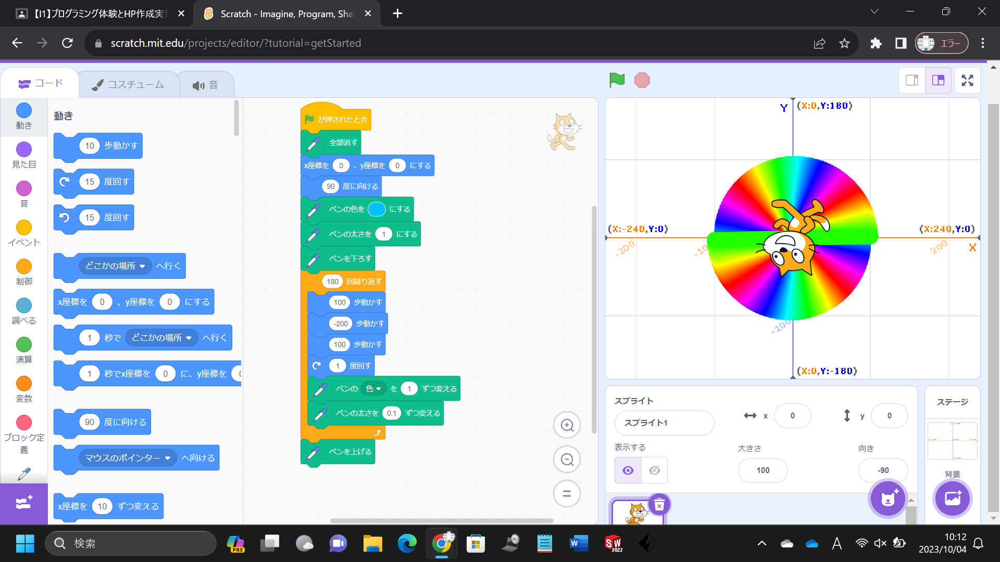
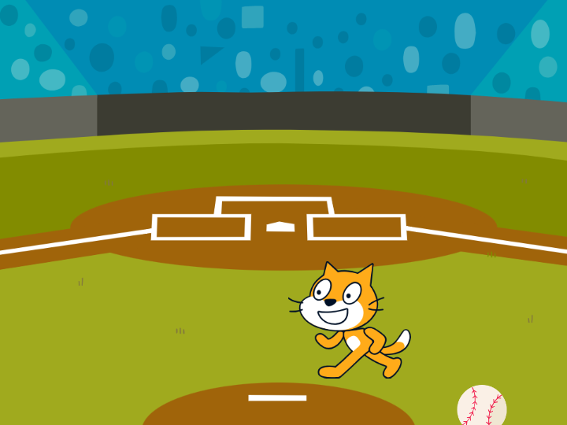

1週目のレポート ： 公大高専１年実習I-1
4-b班22番 tatsso
第1週目
1-1 サイエンスアート

1.内容
スクラッチを使って線を書くプログラムを用い、少しずつ色と線の太さを変えて彩を持たせたものを作った。
2.感想
プログラムに久しぶりに触れたが、アート作品のようなものを簡単に作ることができ、驚いた。
1-2 ゲーム

1.内容
私は野球に少し関心があったので背景と落ちてくるスプライトを野球にちなんだものにした。さらにそのままだと簡単だったので周防ライトが落ちるじかんを0.1～1.2秒にし、難易度を上げてみた。
2.感想
スクラッチを使ったプログラミングは以前に何度か試したことがあったが、コスチュームや音の編集については今回はじめて知ったのでさらに面白い作品を作ることができるように感じた。
1-3 ホームページ作成
私のホームページ
1.内容
自分が好きなものを端的に示した
2.感想
こんな簡単にホームページを作ることができることに驚いた。工夫すれば多くの人に閲覧されるホームページを作れそうだ。